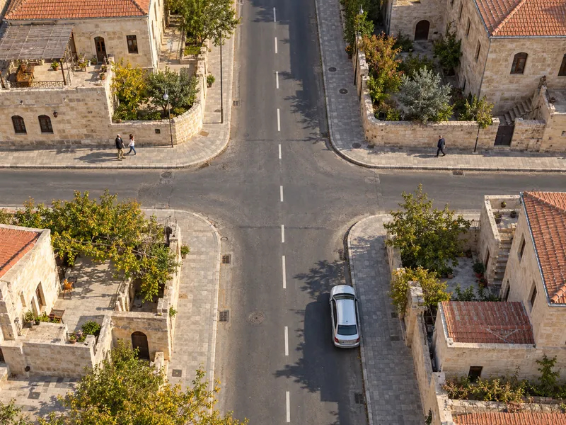

Trafik ve ÇevreKonu 1 / 1741 çıkmış soru
Trafikle ilgili temel kavramlar
Trafik ortamında sık kullanılan temel kavramları (kara yolu ve bölümleri, yol türleri, araç ve taşıt çeşitleri, yol kullanıcıları) ve trafikle ilgili kurumların başlıca görevlerini kapsar.

1Konu anlatımı
Akılda kalsın
- Kara yolu; trafik için kamunun yararlanmasına açık olan arazi şeridi, köprüler ve alanlardır.
- Taşıt yolunun çizgilerle ayrılmış, bir sıra taşıtın güvenle gidebileceği her bölümüne şerit; taşıt yolunun kenarında kalan, taşıt trafiğine ayrılmamış kısma banket denir.
- Araç genel addır; insan, hayvan veya yük taşımaya yarayan araca taşıt denir.
- Her türlü aracı süren kişi sürücü, ticari olarak tescil edilmiş motorlu taşıtı süren kişi şofördür.
- Kamyonetin azami yüklü ağırlığı 3.500 kg'ı geçmez; minibüs, sürücüsü dahil oturma yeri on yediyi aşmayan otobüstür.
- Yolunda yol ver veya DUR levhası bulunan sürücü tali yoldadır ve ana yoldaki araçlara yol verir.
- Trafik işaretlerini bozmak, yerini değiştirmek ve görülmesini engellemek yasaktır; eskiyenleri yenilemek sorumlu kuruluşun görevidir.
Trafik ve kara yolu
Trafik, yayaların, hayvanların ve araçların kara yolları üzerindeki hâl ve hareketlerinin tümüdür. Kara yolu ise trafik için kamunun yararlanmasına açık olan arazi şeridi, köprüler ve alanlardır. Yalnızca belirli kişilere ya da özel bir amaca ayrılmış alanlar bu tanıma girmez.
Kara yolunun bölümleri ve sık kullanılan yol kavramları aşağıda özetlenmiştir:
| Kavram | Anlamı |
|---|---|
| Taşıt yolu (kaplama) | Kara yolunun genel olarak taşıt trafiğince kullanılan kısmı. |
| Şerit | Taşıt yolunun, taşıtların bir dizi hâlinde güvenle seyredebilmesi için çizgilerle ayrılmış her bir bölümü. |
| Banket | Taşıt yolunun kenarında kalan, taşıt trafiğine ayrılmamış kısım. |
| Yaya yolu (kaldırım) | Kara yolunun yayaların kullanmasına ayrılmış kısmı. |
| Yaya geçidi | Taşıt yolunda, yayaların güvenle karşıya geçebilmesi için trafik işaretleriyle belirlenmiş alan. |
| Kavşak | İki veya daha fazla kara yolunun kesişmesi ya da birleşmesiyle oluşan ortak alan. |
| Hemzemin geçit | Kara yolu ile demir yolunun aynı seviyede kesiştiği yer. |
| Tehlikeli eğim | Araçların güvenle ilerleyebilmesi için vites küçültmeyi gerektiren uzunluk veya açıdaki yol eğimi; bu kesimlerde motor freninden yararlanılır. |
Yol türleri
- İki yönlü kara yolu: Gidiş ve geliş trafiğinin aynı taşıt yolunu kullandığı, yönlerin yalnızca yol çizgisiyle ayrıldığı yol.
- Tek yönlü kara yolu: Bütün taşıtların aynı yönde ilerlediği yol; şeritlerdeki yön okları da hep aynı yönü gösterir.
- Bölünmüş kara yolu: Gidiş ve geliş yönlerinin refüj, bariyer gibi bir ayırıcıyla fiziksel olarak birbirinden ayrıldığı yol.
- Ana yol: Kavşakta geçiş önceliği bulunan yol.
- Tali yol: Trafik yoğunluğu bakımından bağlandığı yoldan daha az önemde olan yol. Tali yoldan gelen sürücü ana yoldaki araçlara geçiş hakkı verir.
Araç ve taşıt türleri
Araç, kara yollarında kullanılabilen motorlu ve motorsuz taşıtlar, özel amaçlı taşıtlar, iş makineleri ve lastik tekerlekli traktörlerin genel adıdır. Bunlardan insan, hayvan veya yük taşımaya yarayanlara taşıt denir. Yani her taşıt bir araçtır, ancak her araç taşıt değildir.
| Taşıt | Tanımı |
|---|---|
| Otomobil | Sürücüsü dahil en fazla dokuz oturma yeri olan, insan taşımak için imal edilmiş motorlu taşıt. |
| Otobüs | Sürücüsü dahil dokuzdan fazla oturma yeri olan, insan taşımak için imal edilmiş motorlu taşıt. |
| Minibüs | Sürücüsü dahil oturma yeri sayısı on yediyi aşmayan otobüs. |
| Kamyonet | Azami yüklü ağırlığı 3.500 kg'ı geçmeyen, yük taşımak için imal edilmiş motorlu taşıt. |
| Kamyon | Azami yüklü ağırlığı 3.500 kg'ı aşan, yük taşımak için imal edilmiş motorlu taşıt. |
| Çekici | Römork veya yarı römork çekmek için imal edilmiş motorlu araç; kendisinde yük kasası yoktur. |
| Römork | Motorlu bir araç tarafından çekilen, yük taşımaya yarayan motorsuz taşıt. |
| Taşıt katarı | Kara yolunda bir birim olarak seyretmek üzere birbirine bağlanmış, en çok iki römorktan oluşan araçlar; örneğin arka arkaya iki römork çeken çekici. |
Bir aracın güvenle taşıyabileceği en çok yük ağırlığına veya yolcu ve hizmetli sayısına taşıma sınırı (kapasite); aracın yüklü veya yüksüz olarak güvenli seyri için belirlenen uzunluk, genişlik ve yükseklik ölçülerine gabari denir.
Yol kullanıcıları
- Sürücü: Kara yolunda motorlu veya motorsuz bir aracı sevk ve idare eden kişi.
- Şoför: Ticari olarak tescil edilmiş bir motorlu taşıtı süren, yani sürücülüğü meslek olarak yapan kişi.
- İşleten: Aracı kendi adına işleten kişi; çoğunlukla aracın sahibidir.
- Yaya ve yolcu: Kara yolunda yürüyerek bulunan kişi yaya; taşıtta sürücü ve görevliler dışında bulunan kişi yolcudur.
Trafik işaretlerinin korunması
Trafik işaretleri bütün yol kullanıcılarının güvenliği içindir. İşaretlerin üzerine yazı yazmak, çizmek, kırmak, delmek veya sökmek; yerlerini değiştirmek ya da ortadan kaldırmak; görülmelerini güçleştirecek biçimde önlerine bir şey koymak yasaktır. Eskiyen işaretlerin yenileriyle değiştirilmesi ise sorumlu kuruluşların görevidir ve trafiği tehlikeye düşürmez. Hasarlı veya eksik bir işareti ilgili kuruluşa bildirmek doğru bir davranıştır.
Kurum ve kuruluşların görevleri
| Kurum | Başlıca görevleri |
|---|---|
| Emniyet Genel Müdürlüğü | Trafiği düzenlemek ve denetlemek, araç tescil işlemlerini yürütmek, trafik kazalarına ilişkin tutanak ve işlemleri yapmak. |
| Karayolları Genel Müdürlüğü | Kara yollarının yapımı ve bakımı, trafik güvenliği için teknik önlemleri almak, işaretleme standartlarını belirlemek. |
| Sağlık Bakanlığı | Kara yollarındaki trafik kazalarıyla ilgili ilk ve acil yardım hizmetlerini planlamak ve uygulamak. |
| Millî Eğitim Bakanlığı | Sürücü kurslarını denetlemek, sürücü adaylarının teorik ve uygulamalı sınavlarını yapmak. |
Haritada yön bulma
Haritalar kuzey yukarıda olacak şekilde düzenlenir: üst kenar kuzeyi, alt kenar güneyi, sağ kenar doğuyu, sol kenar batıyı gösterir. Ana yönlerin arasında kalan yönler kuzeydoğu, güneydoğu, güneybatı ve kuzeybatıdır. Bir güzergâhın yönü bulunurken her şehrin bir öncekine göre konumuna bakılır: haritada sola ve aşağı doğru yapılan bir yolculuk güneybatı, sola ve yukarı doğru yapılan bir yolculuk kuzeybatı yönündedir.
2Bu konunun soruları
MEB sınavlarında bu konudan çıkmış 41 soru (2 tanesi en az üç sınavda soruldu). Her soruda doğru cevabı ve açıklamasını hemen görürsünüz.
Hangi sorular?
Sıralama